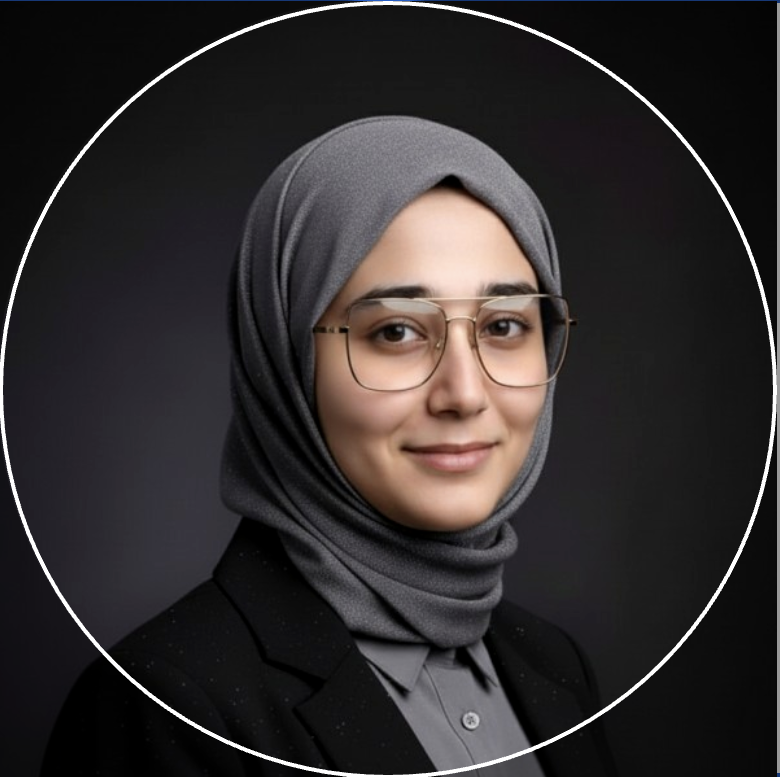

Machine Learning Engineer
Hi, I am Farhat
I'm an AI & ML Engineer and Master's student in Artificial Intelligence passionate about building intelligent systems that solve real-world problems. My interests span machine learning, large language models, NLP, and healthcare AI, with a focus on turning research into practical applications.
GitHubEducation
Yeshiva University
Masters in Artificial Intelligence
2025 – 2026
I chose a second master's in AI to specialize in applying mathematics and machine learning to healthcare problems, where my interests in biology and technology intersect.
Indian Institute of Technology, Tirupati (IIT)
Master of Technology in Computer Science and Engineering
2022 – 2024
Banasthali Vidyapith
Bachelor of Technology in Computer Science and Engineering
2017 – 2021
Jamia Millia Islamia
Higher Secondary School
2014 – 2016
Skills
Programming Languages
- Python
- R
- SQL
Machine Learning and other tools
- Scikit-learn
- PyTorch
- Pandas
- NumPy
- Matplotlib
- Seaborn
- OpenCV
- Microsoft Vott
- LLM
- RAG
- Hugging Face
Experience
Katz School of Science and Health, Nursing
AI Sim Intern
Jun 2026 – Present
Brief description of your responsibilities and impact.
Yeshiva University
Research Assistant
Oct 2025 – Present
Brief description of your responsibilities and impact.
Yeshiva University
Graduate Assistant
Oct 2025 – Present
Brief description of your responsibilities and impact.
IIT Tirupati
Teaching Assistant
Aug 2022 – May 2024
Brief description of your responsibilities and impact.
Research
Patient-level Somatic Mutation Profiles Refine Prognostic Prediction
AI Security Lab, Yeshiva University
2025 – 2026
Brief description of the research focus, methods, or outcomes.
Research title or topic
Institute or lab name
Start year – End year
Brief description of the research focus, methods, or outcomes.
Projects
name of project
Description:
A short description of the project.
Tech Stack:
Python, Jupyter Notebook, NumPy, pandas, Pillow, scikit-learn, PyTorch, matplotlib, seaborn, OpenCV
Results:
A short description of the results of the project.
Gitname of project
Description:
A short description of the project.
Tech Stack:
Python, Jupyter Notebook, NumPy, pandas, Pillow, scikit-learn, PyTorch, matplotlib, seaborn, OpenCV
Results:
A short description of the results of the project.
Gitname of project
Description:
A short description of the project.
Tech Stack:
Python, Jupyter Notebook, NumPy, pandas, Pillow, scikit-learn, PyTorch, matplotlib, seaborn, OpenCV
Results:
A short description of the results of the project.
Gitname of project
Description:
A short description of the project.
Tech Stack:
Python, Jupyter Notebook, NumPy, pandas, Pillow, scikit-learn, PyTorch, matplotlib, seaborn, OpenCV
Results:
A short description of the results of the project.
GitNHANES Kidney Function & Blood Pressure Analysis
Description:
Built a reproducible R analysis pipeline using NHANES demographic, lab, body-measure, blood-pressure, and diabetes datasets. The project examines albumin-to-creatinine ratio, extracellular fluid, and hypertension using exploratory analysis, ANOVA, linear regression, logistic regression, ROC evaluation, and causal mediation analysis.
Tech Stack:
R, NHANES datasets, Regression, tidyverse, ggplot2, caret, pROC, mediation analysis, hypothesis testing, lmtest, medflex
Results:
Found that higher albuminuria stages were associated with higher mean systolic blood pressure, and adjusted models showed log-ACR as a significant predictor of SBP and hypertension risk. The logistic model achieved about 0.753 cross-validated ROC AUC.
GitImage Clustering and Pixel Segmentation
Description:
Converted a rainbow image into pixel-level RGB data, cleaned noisy pixels, and applied clustering algorithms to segment the image by color and position. Implemented KMeans with scikit-learn and a custom clustering method in PyTorch.
Tech Stack:
Python, Jupyter Notebook, NumPy, pandas, Pillow, scikit-learn, PyTorch, matplotlib, seaborn, OpenCV
GitContact
Email: fjahan@mail.yu.edu
LinkedIn: linkedin.com/in/farhat-jahan